load_env()Trueload_env()True# FUTURE reference syntax of string diagrams https://arxiv.org/pdf/2305.08768.pdf
# FUTURE in future, add automatic async conversion to functions running in parallel using https://stackoverflow.com/a/70880583
# FUTURE descrive that we have flow diagrams and decision diagramsBaseModelExtra (**extra_data:Any)
*!!! abstract “Usage Documentation” Models
A base class for creating Pydantic models.
Attributes: class_vars: The names of the class variables defined on the model. private_attributes: Metadata about the private attributes of the model. signature: The synthesized __init__ [Signature][inspect.Signature] of the model.
__pydantic_complete__: Whether model building is completed, or if there are still undefined fields.
__pydantic_core_schema__: The core schema of the model.
__pydantic_custom_init__: Whether the model has a custom `__init__` function.
__pydantic_decorators__: Metadata containing the decorators defined on the model.
This replaces `Model.__validators__` and `Model.__root_validators__` from Pydantic V1.
__pydantic_generic_metadata__: Metadata for generic models; contains data used for a similar purpose to
__args__, __origin__, __parameters__ in typing-module generics. May eventually be replaced by these.
__pydantic_parent_namespace__: Parent namespace of the model, used for automatic rebuilding of models.
__pydantic_post_init__: The name of the post-init method for the model, if defined.
__pydantic_root_model__: Whether the model is a [`RootModel`][pydantic.root_model.RootModel].
__pydantic_serializer__: The `pydantic-core` `SchemaSerializer` used to dump instances of the model.
__pydantic_validator__: The `pydantic-core` `SchemaValidator` used to validate instances of the model.
__pydantic_fields__: A dictionary of field names and their corresponding [`FieldInfo`][pydantic.fields.FieldInfo] objects.
__pydantic_computed_fields__: A dictionary of computed field names and their corresponding [`ComputedFieldInfo`][pydantic.fields.ComputedFieldInfo] objects.
__pydantic_extra__: A dictionary containing extra values, if [`extra`][pydantic.config.ConfigDict.extra]
is set to `'allow'`.
__pydantic_fields_set__: The names of fields explicitly set during instantiation.
__pydantic_private__: Values of private attributes set on the model instance.*set_state_key (state, key, value)
get_state_key (state, key)
get_attr_metadata (obj, attr)
class RequiredFieldState(BaseModel):
field:ints = RequiredFieldState(field=3)
set_state_key(s,'field',5)
assert s == RequiredFieldState(field=5)# a custom state is any basemodel
class CustomState(BaseModel):
# we can allow arbitrary attributes by setting extra='allow'
# this is useful for defining on the fly state keys with normal behavior
model_config = ConfigDict(extra='allow')
history:list[int] = list()
_hidden_attribute:str = 'hidden'
annoated_list: Annotated[list[int],list.append] = list()
def add_message(self,value):
self.history.append(value)
def first_message(self)->int:
if len(self.history) == 0:
return 0
return self.history[0]
@computed_field
def last_message(self)->int:
if len(self.history) == 0:
return 0
return self.history[-1]
@property
def hidden(self):
return self._hidden_attribute
@hidden.setter
def hidden(self,value):
self._hidden_attribute = values = CustomState()
s.add_message(3)
sCustomState(history=[3], annoated_list=[], last_message=3)set_state_key(s,'extra_attr',10)
set_state_key(s,'add_message',4)
set_state_key(s,'hidden','different hidden')
set_state_key(s,'annoated_list',5)assert get_state_key(s,'last_message') == 4
assert get_state_key(s,'first_message') == 3
assert get_state_key(s,'hidden') == 'different hidden'
assert s.model_dump() == {'history': [3, 4], 'extra_attr': 10, 'last_message': 4,'annoated_list':[5]},sDiagramSchema (graph=None, state_class=<class '__main__.BaseModelExtra'>, factored_graph=None, start_node=None, end_node=None, name=None, type:__main__.DiagramType=None, anon=False, derive_state=False)
*A class representing a diagram schema for computational graphs.
A Diagram defines a directed graph structure where nodes represent computational steps and edges represent data flow between them. and supports validation of graph structure and parallel execution paths.
Params: name (str): Optional name for the diagram schema graph (nx.DiGraph): The underlying NetworkX directed graph factored_graph (nx.DiGraph, optional): A simplified version of the graph after factorisation, where the entire diagram is of a single type. start_node (str): Name of the starting node, defaults to ‘Start’ end_node (str): Name of the ending node, defaults to ‘End’ type (DiagramType): The type of diagram (e.g. Flow, Decision) anon (bool): Whether this is an anonymous diagram derive_state (bool): Whether to derive the state from a calling diagram*
DiagramType (*values)
*Create a collection of name/value pairs.
Example enumeration:
class Color(Enum): … RED = 1 … BLUE = 2 … GREEN = 3
Access them by:
attribute access:
Color.RED <Color.RED: 1>
value lookup:
Color(1) <Color.RED: 1>
name lookup:
Color[‘RED’] <Color.RED: 1>
Enumerations can be iterated over, and know how many members they have:
len(Color) 3
list(Color) [<Color.RED: 1>, <Color.BLUE: 2>, <Color.GREEN: 3>]
Methods can be added to enumerations, and members can have their own attributes – see the documentation for details.*
Diagram (**kwargs)
*An instance of a ladle diagram. Instantiated by calling the Schema()
Has the following public attributes: output - the output of the last run finished - whether the diagram has reached the End node state - the current state of the diagram*
CurrentScheme ()
Define (diagram_name, type:str='flow', state:pydantic.main.BaseModel=<class '__main__.BaseModelExtra'>, draw:bool=True, draw_raw:bool=False, validate:bool=True, direction:str='TB')
*Define a new diagram using a context manager.
Args: diagram_name: Name for the new diagram type: The type of diagram to create. Defaults to ‘flow’ state: The state class to use for the diagram. Defaults to BaseModelExtra solve_name_conflicts: If True, append numbers to duplicate names. If False, raise error. Defaults to False draw: If True, draws the diagram after definition. Defaults to True draw_raw: If True, draws the raw graph after definition. Defaults to False validate: If True, validates diagram structure after definition. Defaults to True direction: the direction to draw the diagram in, either TB or LR. Defaults to TB
Yields: The created diagram object
Raises: ValueError: If diagram_name already exists and solve_name_conflicts is False*
Scope (scope:str)
*Context manager for defining a flow/decision scope in a diagram of a different type
Args: scope: The scope type to start. Can be either a string (‘flow’ or ‘decision’).*
E (edge_string:str, cond:Callable=None, type:str=None)
*Add an edge to the current diagram
Args: edge_string: The edge descriptor string cond: The condition of the edge type: The type of the edge, either ‘flow’ or ‘decision’, by default, the type is determined by the current scope*
V (name:str, func:Callable=None, inputs:Any=None, outputs=None, is_break:bool=False, for_each:Optional[List[str]]=None, filter:bool=False, flat:bool=False, as_start:bool=False, as_end:bool=False)
*Add a vertex (node) to the current diagram.
Args: name (str): Name of the node func (callable, optional): Function to execute at this node. If None, node acts as a passthrough inputs (List[str], optional): List of input edge descriptors. Each descriptor can be either: - A string in format “source_node.source_port->target_port” - A tuple (edge_descriptor, condition_func) for conditional edges outputs (List[str], optional): List of output edge descriptors. Each descriptor can be either: - A string in format “source_port->target_node.target_port” - A tuple (edge_descriptor, condition_func) for conditional edges is_break (bool, optional): If True, execution will pause at this node. Not allowed in flow scopes for_each (List[str|int], optional): List of input keys to iterate over. Used for batching operations in Flow diagrams. If provided, the node will be executed once for each product of items in the input list. This for each keys must get iteratbles from the input edges. filter (bool, optional): Used for batching operations in Flow diagrams. If True, falsy node outputs will be filtered out. Cannot be used with flat=True flat (bool, optional): Used for batching operations in Flow diagrams. If True, node output lists will be flattened into a single list. Cannot be used with filter=True as_start (bool, optional): If True, marks this node as the diagram’s start node as_end (bool, optional): If True, marks this node as the diagram’s end node
Returns: str: Name of the created node
Raises: ValueError: If both filter and flat are True ValueError: If validator is not callable or BaseModel ValueError: If break node is used in flow scope*
with checkLogs(name='__main__'):
with Define('test_d',type='decision',validate=False,draw=False,draw_raw=True) as TestD:
V('process4',is_break=True)
E('Start->process4')
E('process4->End(**=a)')
E('Start->process1',NamedLambda('is_even',lambda x: x%2==0))
E('identity->End(**)')
with Scope('flow'):
V('process1',
func=NamedLambda('add1',lambda x: x+1),
outputs=['state/result'],)
V('process2',
func=NamedLambda('add2',lambda x: x+2),
inputs=['process1'],
for_each =[0]
)
V('process3',
func=NamedLambda('add5',lambda x: x+5),
inputs=['process1'],)
V('identity',
inputs=['process2(x=a)',
'process3(y=b)',
'state/result(input=.)',
],
for_each = ['x']
)
with Define('test_d2',type='decision',validate=False,draw=False,draw_raw=False) as TestD2:
V('proc',TestD,
inputs=['Start'],
outputs=['End'],
)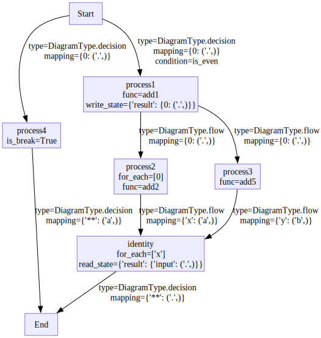
NodeMapper ()
Initialize self. See help(type(self)) for accurate signature.
node_data_list,edge_data_list = _diagram_to_graphviz_data(TestD.graph)
node_data_list,edge_data_list([{'name': 'node_0',
'label': 'process4',
'shape': 'box',
'style': 'dashed,filled'},
{'name': 'node_1',
'label': 'Start',
'shape': 'box',
'style': 'solid,filled'},
{'name': 'node_2', 'label': 'End', 'shape': 'box', 'style': 'solid,filled'},
{'name': 'node_3',
'label': 'process1[ add1 ]',
'shape': 'box',
'style': 'solid,filled'},
{'name': 'node_4',
'label': 'State[result]',
'shape': 'cylinder',
'style': 'solid,filled'},
{'name': 'node_5',
'label': 'identity[ foreach=[x] ]',
'shape': 'box',
'style': 'bold,filled'},
{'name': 'node_6',
'label': 'process2[ add2, foreach=[0] ]',
'shape': 'box',
'style': 'bold,filled'},
{'name': 'node_7',
'label': 'process3[ add5 ]',
'shape': 'box',
'style': 'solid,filled'}],
[{'tail_name': 'node_3',
'head_name': 'node_4',
'label': '',
'style': 'dashed'},
{'tail_name': 'node_4',
'head_name': 'node_5',
'label': '. -> input',
'style': 'dashed'},
{'tail_name': 'node_0',
'head_name': 'node_2',
'label': 'a -> **',
'style': 'bold',
'color': 'blue'},
{'tail_name': 'node_1',
'head_name': 'node_0',
'label': None,
'style': 'bold',
'color': 'blue'},
{'tail_name': 'node_1',
'head_name': 'node_3',
'label': '?(is_even)',
'style': 'bold',
'color': 'blue'},
{'tail_name': 'node_3',
'head_name': 'node_6',
'label': None,
'style': 'solid',
'color': 'black'},
{'tail_name': 'node_3',
'head_name': 'node_7',
'label': None,
'style': 'solid',
'color': 'black'},
{'tail_name': 'node_5',
'head_name': 'node_2',
'label': '. -> **',
'style': 'bold',
'color': 'blue'},
{'tail_name': 'node_6',
'head_name': 'node_5',
'label': 'a -> x',
'style': 'solid',
'color': 'black'},
{'tail_name': 'node_7',
'head_name': 'node_5',
'label': 'b -> y',
'style': 'solid',
'color': 'black'}])dot = draw_graphviz(node_data_list,edge_data_list,
name=TestD.name,direction='TB',
node_attrs={'shape':'box','color':'#9370DB','fillcolor':'#ECECFF','style':'filled'}
,edge_attrs={},graph_attrs={})
dot
#TODO from here make this work with the draw_diagram interface
diagram_to_dot_single (graph, name, direction='TB', **kwargs)
diagram_to_dot_single(TestD.graph,TestD.name)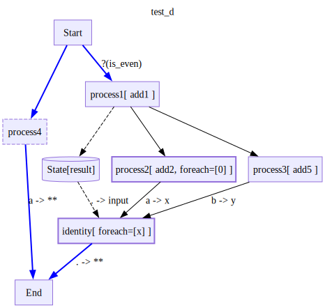
draw_diagram (diagram, name=None, return_dot=False, direction='TB', recursive:Union[bool,List[str]]=False, factored=False, **kwargs)
*Draw a diagram using graphviz. kwargs are sent to wrap to constrain node and edge labels
Args: diagram: Either a diagram object or a diagram scheme object name: If provided, uses this name for the diagram in the Mermaid title return_dot: If True, returns the graphviz dot object direction: direction to draw, either TB (top to bottom) or LR (left to right), defaults to TB recursive: Whether to draw subdiagrams as well. If False, only the top level diagram is drawn. If True, all subdiagrams are drawn. If a list of strings, only the subdiagrams with whose names the regex strings are drawn. factored: If True, draws the factored graph, used for debugging Returns: If return_dot is True, returns dot objects Otherwise displays diagram when in an Ipython environment*
with Define('test_state_read',type='decision',validate=False) as TestStateRead:
V('add',inputs=['Start'],outputs=['End(data=.)'])
E('state/outside_state->End(state_data=.)')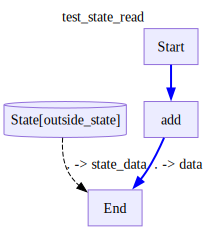
_diagram_to_graphviz_data(TestStateRead.graph)([{'name': 'node_0', 'label': 'add', 'shape': 'box', 'style': 'solid,filled'},
{'name': 'node_1',
'label': 'Start',
'shape': 'box',
'style': 'solid,filled'},
{'name': 'node_2', 'label': 'End', 'shape': 'box', 'style': 'solid,filled'},
{'name': 'node_3',
'label': 'State[outside_state]',
'shape': 'cylinder',
'style': 'solid,filled'}],
[{'tail_name': 'node_3',
'head_name': 'node_2',
'label': '. -> state_data',
'style': 'dashed'},
{'tail_name': 'node_0',
'head_name': 'node_2',
'label': '. -> data',
'style': 'bold',
'color': 'blue'},
{'tail_name': 'node_1',
'head_name': 'node_0',
'label': None,
'style': 'bold',
'color': 'blue'}])draw_diagram(TestD)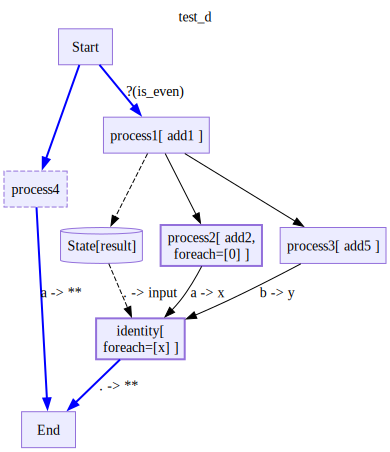
draw_diagram(TestD2,recursive=True)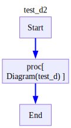
compress_cuts (g, start_node, end_node, ret_raw_graph=False, wrap_as_diagram=False)
class Adder():
def __init__(self,x):
self.x = x
def __call__(self,y):
return self.x + y
def __repr__(self):
return f'Adder({self.x})'
sum = NamedLambda('sum',sum)
is112 = NamedLambda('is112',lambda x: x == 112)
with Define('paralell with choice',type='decision',validate=False) as d:
V('add1',Adder(1),inputs=['Start'])
with Scope('flow'):
V('add10',Adder(10),inputs=['add1'])
V('add100',Adder(100),inputs=['add1'])
V('sum',sum,inputs=['add10(y=.)','add100(x=.)'])
E('sum->End')
E('sum->add1_again',cond=is112)
E('add1_again->add1')
#EXPLAIN what are legal parallel cut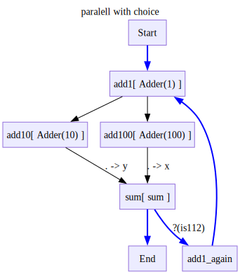
with checkLogs(name='__main__'):
d.factored_graph,_ = compress_cuts(d.graph,'Start','End')draw_diagram(d,factored=True)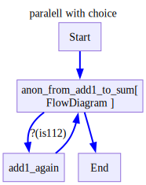
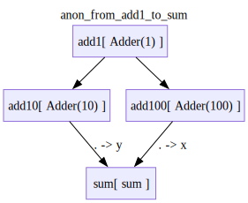
draw_nx(d.factored_graph)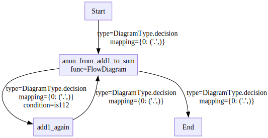
draw_nx(d.factored_graph.nodes['anon_from_add1_to_sum']['func'].factored_graph)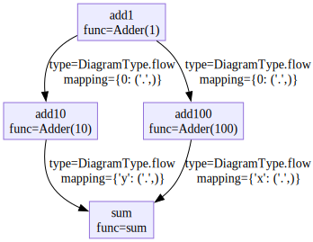
with checkLogs(name='__main__'):
TestD.factored_graph,_ = compress_cuts(TestD.graph,'Start','End')draw_diagram(TestD,factored=False)draw_diagram(TestD,factored=True)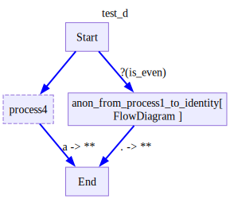
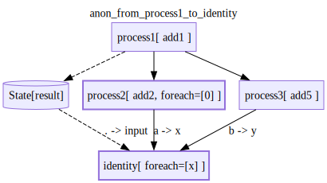
# Handling state conflicts
# flow nodes cant write state if they have a non one mutiplicity
# or if there is another node that reads or writes the same state
# for nested anonymous diagrams, where state is shared, we need an ownership mechanism
# each subdiagram has who it reads and writes to, and we need to make sure that there are no multiplicities except multiple readers at once.
# also, we need to figure out how to avoid sharing states between a subdiagram that is used twice in a flow diagram. we need to make copies of the diagram for each one.
# currently, to start, I won't allow writing to shared state within a flow diagram.
# this is done by checking read_keys and write_keys on the unfactored graphDiagramSchema.post_def ()
validate the graph and factor it
with checkLogs(name='__main__'):
with Define('test_d',type='decision',validate=False) as test_d:
V('process4',is_break=True)
E('Start->process4')
E('process4->End')
E('Start->process1',cond=NamedLambda('is_even',lambda x: x%2==0))
E('identity->End')
with Scope('flow'):
V('process1',
func=NamedLambda('add1',lambda x: x+1),
outputs=['state/result'],)
V('process2',
func=NamedLambda('add2',lambda x: x+2),
inputs=['process1'],
for_each =[0]
)
V('process3',
func=NamedLambda('add5',lambda x: x+5),
inputs=['process1'],)
V('identity',
inputs=['process2(x=a)',
'process3(y=b)',
'state/result(input=.)',
],
)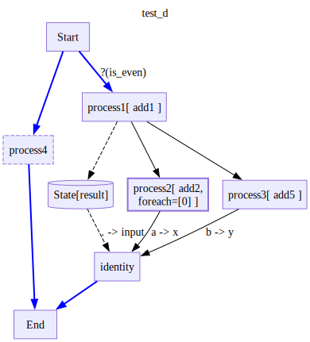
display(draw_nx(test_d.graph))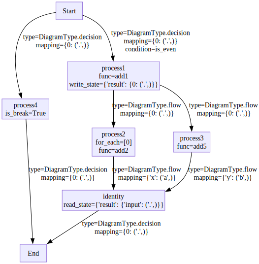
test_d.factored_graph,test_d.type = compress_cuts(test_d.graph,test_d.start_node,test_d.end_node)display(draw_nx(test_d.graph))display(draw_nx(test_d.factored_graph))
display(draw_nx(test_d.factored_graph.nodes['anon_from_process1_to_identity']['func'].factored_graph))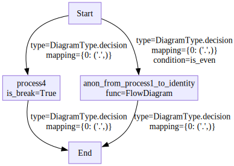
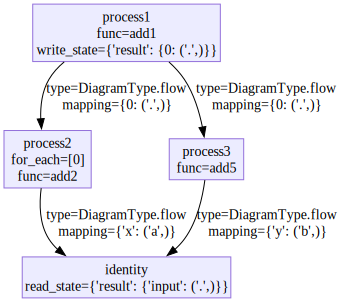
DiagramSchema.get_input_only_state_keys ()
draw_nx(test_d.factored_graph)
Diagram.compute_node_input (node, previous_outputs, state, raw_input=False, partial=False)
Prepare the input for the next node execution
TruncatedPrettyPrinter (*args, str_length=100, **kwargs)
*Handle pretty printing operations onto a stream using a set of configured parameters.
indent Number of spaces to indent for each level of nesting.
width Attempted maximum number of columns in the output.
depth The maximum depth to print out nested structures.
stream The desired output stream. If omitted (or false), the standard output stream available at construction will be used.
compact If true, several items will be combined in one line.
sort_dicts If true, dict keys are sorted.
underscore_numbers If true, digit groups are separated with underscores.*
Trace (run_uid:str, node_uid:str, node_name:List[str], input_idx:List[Optional[int]]=[None], node_func:Optional[Any]=None, input_state_keys:Optional[set[str]]=None, input_:Any, output:Optional[Any]=None, run_type:__main__.DiagramType, start_time:Optional[datetime.datetime]=None, end_time:Optional[datetime.datetime]=None)
*!!! abstract “Usage Documentation” Models
A base class for creating Pydantic models.
Attributes: class_vars: The names of the class variables defined on the model. private_attributes: Metadata about the private attributes of the model. signature: The synthesized __init__ [Signature][inspect.Signature] of the model.
__pydantic_complete__: Whether model building is completed, or if there are still undefined fields.
__pydantic_core_schema__: The core schema of the model.
__pydantic_custom_init__: Whether the model has a custom `__init__` function.
__pydantic_decorators__: Metadata containing the decorators defined on the model.
This replaces `Model.__validators__` and `Model.__root_validators__` from Pydantic V1.
__pydantic_generic_metadata__: Metadata for generic models; contains data used for a similar purpose to
__args__, __origin__, __parameters__ in typing-module generics. May eventually be replaced by these.
__pydantic_parent_namespace__: Parent namespace of the model, used for automatic rebuilding of models.
__pydantic_post_init__: The name of the post-init method for the model, if defined.
__pydantic_root_model__: Whether the model is a [`RootModel`][pydantic.root_model.RootModel].
__pydantic_serializer__: The `pydantic-core` `SchemaSerializer` used to dump instances of the model.
__pydantic_validator__: The `pydantic-core` `SchemaValidator` used to validate instances of the model.
__pydantic_fields__: A dictionary of field names and their corresponding [`FieldInfo`][pydantic.fields.FieldInfo] objects.
__pydantic_computed_fields__: A dictionary of computed field names and their corresponding [`ComputedFieldInfo`][pydantic.fields.ComputedFieldInfo] objects.
__pydantic_extra__: A dictionary containing extra values, if [`extra`][pydantic.config.ConfigDict.extra]
is set to `'allow'`.
__pydantic_fields_set__: The names of fields explicitly set during instantiation.
__pydantic_private__: Values of private attributes set on the model instance.*Diagram.prep_trace (node, input_, output, type=<DiagramType.decision: 'decision'>, idx=None, start_time=None, end_time=None)
Diagram.run_subdiagram_iter (node, input_, subdiagram, idx=None)
Run a subdiagram as a node yields traces from the subdiagram returns the output of the subdiagram and the subdiagram itself
Diagram.run_node (node, input_, idx=None)
simplify_output (input_)
# we need to factor the port mapping out into a seperate function that works on mapping data.
# we save the mapping data during post_def
# we can check for conflicts in the mapping data based on the decision/flow semantics.
# and then we use it in the arun decision and arun flow functions
# this function should be in pos_kwargs syntax, we can probably simplify the function inputclass by just keeping the assert and the args kwargs as functions.
# when we are in decision, lets us a read_keys to output function
# and then just pass the mapping data with ('father_node','state') to the mapping
# in flow, we will paritally apply the mapping data to the input ports. as new fathers finish, ultimately merging stream and regular inputs.Diagram.arun_decision (input_, state, **kwargs)
Diagram.choose_next_node (node, output)
Based on the output of the last node, choose the next node returns the next node to run, or None if we are at the end
Diagram.update_state (graph, node)
Diagram.can_generate_new_input (graph, node)
NodeState (*values)
*Create a collection of name/value pairs.
Example enumeration:
class Color(Enum): … RED = 1 … BLUE = 2 … GREEN = 3
Access them by:
attribute access:
Color.RED <Color.RED: 1>
value lookup:
Color(1) <Color.RED: 1>
name lookup:
Color[‘RED’] <Color.RED: 1>
Enumerations can be iterated over, and know how many members they have:
len(Color) 3
list(Color) [<Color.RED: 1>, <Color.BLUE: 2>, <Color.GREEN: 3>]
Methods can be added to enumerations, and members can have their own attributes – see the documentation for details.*
Diagram.enqueue_task (node, input_, idx)
*Create appropriate task type and add to corresponding task dict. Handles AsyncIter initialization and tracks task creation time.
Args: node: Node to execute input_: Input data for the node idx: Execution index for the node tasks: Dict of regular tasks iterator_tasks: Dict of iterator tasks subdiagram_tasks: Dict of subdiagram tasks*
Diagram.handle_finished_task (task)
*Handle a completed task and return node, trace, and outputs
Args: task: The completed asyncio task
Returns: Tuple of: - node: The node that completed - trace: The execution trace (or None) - outputs: List of outputs (or None)*
Diagram.enqueue_new_input (graph, node, father_node, new_father_outputs)
*Lets look at this example U.(x,y)->V.(a,b) V foreach a U is a stream node W.(z,w)->V.(c,d) V foreach d W is a regular node M.(a,b)->V.(e,f) V for each e,f, M is a stream node N.(a,b)->V.(g,h) V for each g,h, N is a regular node
We need to have all 8 of a,b,c,d,e,f,g,h Since W is regular, once we compute it, we portmap it to c,d and overide them Since U is a stream node, we need to get every item from it and extend the port mappings Both W and U have a regular port, so we need to wait for both to finish N is a regular node but all it’s outputs are foreach nodes, so we dont need to wait for it but we cant run until it finishes
M only has foreach nodes, so we dont need to wait for it We need to wait till for both ot finish since both have a foreach
then we have a mapped dict of: { a: a list since U is a stream node b: a list since U is a stream node c: some object since W is a regular node d: a list since we need to for each it (we need to check this) e-h: lists since we are foreach }*
Diagram.arun_flow (input_, state=None)
Run a flow diagram asynchronously, yielding traces for each node execution
Diagram.load_external_state (outside_state=None)
Diagram.run_all (input:Any, state:Union[pydantic.main.BaseModel,Dict]=None, progress_bars:bool=True, trace_nested:bool=True)
*Run the diagram to completion and return the final output.
Args: input: The input data to process through the diagram state: Optional state to initialize the diagram with progress_bars: Whether to display progress bars during execution (default True). Deprecated. trace_nested: Whether to trace nested diagram execution (default True)
Returns: The final output after diagram execution completes*
Diagram.run (input:Any, state:Union[pydantic.main.BaseModel,Dict]=None, progress_bars:bool=True, trace_nested:bool=True)
*Run the diagram with the given input and state.
Args: input: The input data to process through the diagram state: Optional state to initialize the diagram with progress_bars: Whether to display progress bars during execution (default True). Deprecated. trace_nested: Whether to trace nested diagram execution (default True)
Yields: Trace objects containing execution state at each step*
Diagram.arun (input:Any, state:Union[pydantic.main.BaseModel,Dict]=None, progress_bars:bool=True, trace_nested:bool=True)
*Asynchronously run the diagram with the given input and state.
Args: input: The input data to process through the diagram state: Optional state to initialize the diagram with progress_bars: Whether to display progress bars during execution (default True). Deprecated. trace_nested: Whether to trace nested diagram execution (default True)
Yields: Trace objects containing execution state at each step*
Diagram.get_node_func (node)
*Get the function associated with a node in the diagram.
Args: node: The node identifier to get the function for
Returns: The function associated with the given node in the diagram*
# TODO future
# show if clause for condition edge in drawing, and annotation for setting state
# TODO add support for progress bars.